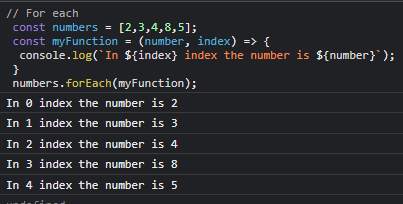

 

Map Methods- It always make a new array
- Always use return


Filter Methods- It returns a boolean value so keep that in mind

Reduce Methods- It always takes accumulator, currentValue and InitialValue as its parameter in the callback function


Sort method- It will mutate the array
- Works in the ASCII numbers(a = 97,A =65)


Find Method


Every Method


Some Method


Fill Method- This methods mutates the array

Splice method- Returns the removed element as well as mutates the array